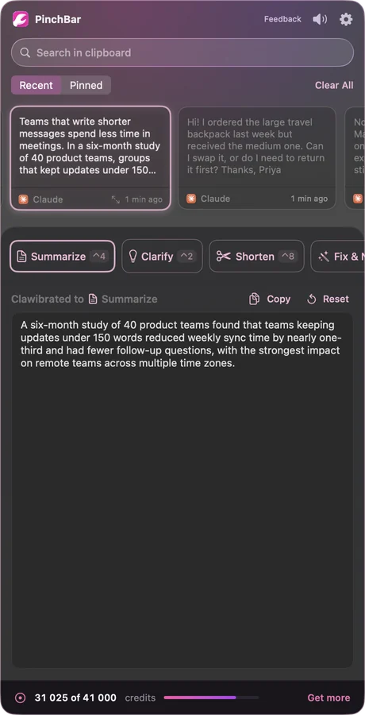
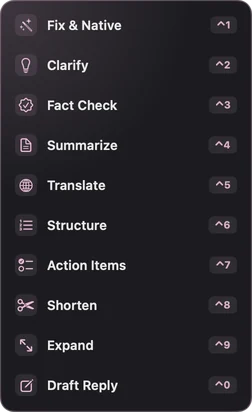
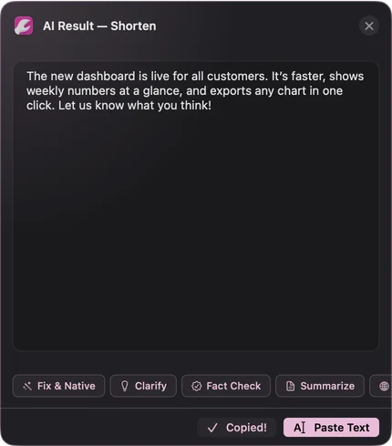
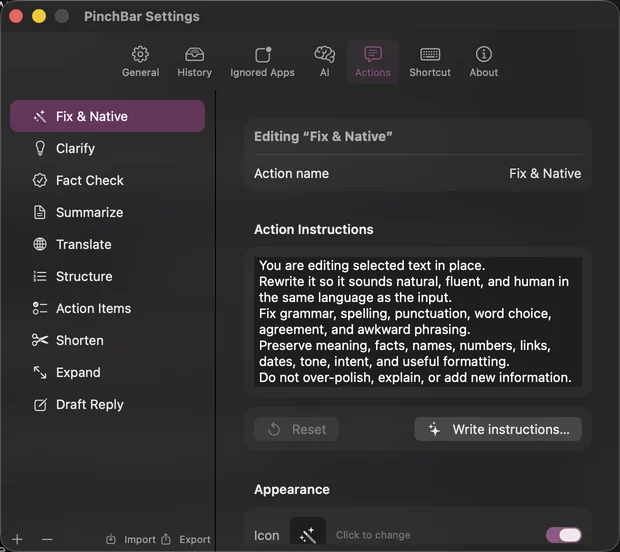
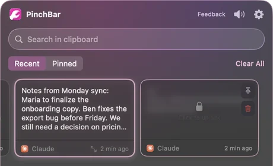
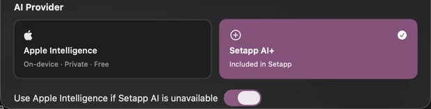
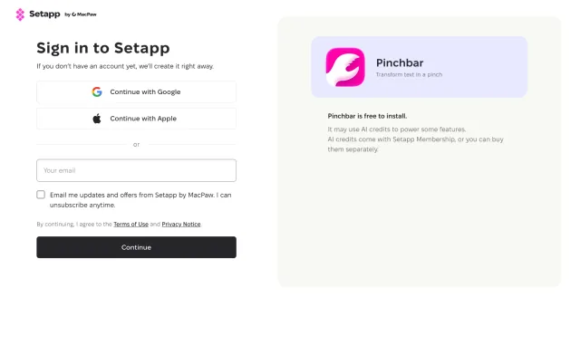
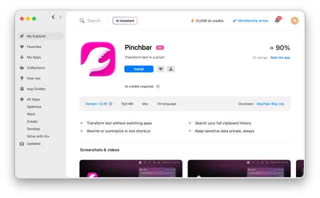
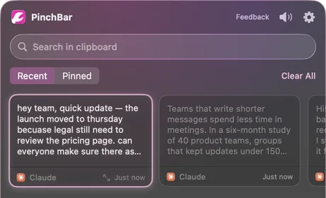
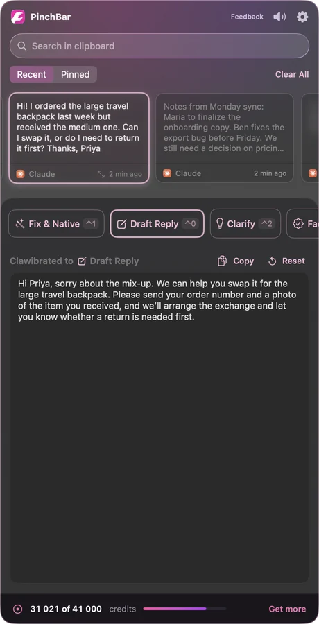

Built on Copy and Paste
You copy the way you always have. PinchBar keeps a searchable history and puts AI actions right next to it.
Last 200 copies kept by default
AI text actions for your Mac menu bar
PinchBar keeps everything you copy and turns it into a better version with one shortcut. Fix it, summarize it, translate it or draft a reply — then paste.
Made byMacPaw
Available onSetapp
Runs on-device withApple Intelligence
Why PinchBar
You copy the way you always have. PinchBar keeps a searchable history and puts AI actions right next to it.
Last 200 copies kept by default
AI comes with Setapp, so there is no API key to paste and no account to manage. Pick an action and go.
2,500 bonus AI credits for new users
History stays on your Mac. Text goes to AI only when you run an action — and with Apple Intelligence, it never leaves the Mac.
Keys and tokens saved as locked cards
Features
01 The panel
The PinchBar panel drops down from the menu bar with your recent copies on top and a row of actions below. Pick a card, pick an action, and the result appears underneath.
⌃C opens the panel. Change it any time in Settings → Shortcut.

02 Selected Text Actions
Select text in another app and a small PinchBar button appears next to it. Choose an action, check the result, and paste it straight back over your selection.
Select text, press ⌃8 to Shorten it. Needs Accessibility access.


03 Your actions
Every action is a short set of instructions you can read and rewrite. Tune the built-in ones to your voice, or add actions for the jobs you repeat every week.
The first ten actions get ⌃1 to ⌃0.

04 History & privacy
PinchBar remembers what you copied so you can find it again. It also knows what not to keep in plain sight.
Keeps your last 200 copies by default — set any limit from 10 up.

Try an action
These are pre-written examples of what PinchBar returns. Real results vary with your text.
1 · Your text
2 · Action
Example outputFix & Native
How it works
Install it for free. New users start with 2,500 bonus AI credits.
Free · Setapp · 2,500 bonus AI credits
In Mail, Slack, Notes, your browser — anywhere you write.
⌘C as usual
Open the panel, choose an action, then Copy — or Paste Text over your selection.
⌃C opens PinchBar
Compare
The 10 built-in actions
Fixes grammar, spelling and awkward phrasing so it sounds natural.
Makes the main point obvious and the text easier to act on.
Gives a verdict on factual claims, with reasons. No live web search.
Key facts, decisions and next steps for a busy reader.
Idiomatic translation that keeps tone, names and formatting.
Turns a wall of text into headings, bullets or steps.
Pulls out a checklist of clear, verb-first tasks.
Cuts filler and repetition — often 40–60% shorter.
A fuller, clearer version, without invented facts.
A short reply that answers what was asked.
| The usual way | With PinchBar |
|---|---|
| Copy, open a chatbot tab, paste, type a prompt | Press ⌃C and pick an action |
| Rewrite the same prompt every time | Ten saved actions, each on a shortcut |
| Copy the answer, switch back, paste it in | Paste Text replaces your selection |
| The thing you copied ten minutes ago is gone | Your last 200 copies, searchable |
| Keys and tokens sit in plain clipboard history | Secrets are saved as locked cards |
Custom actions
An action is just a name and a few lines of instructions. Add as many as you need in Settings → Actions, or edit a built-in one until it fits the way you write.
New action
Turn the selected changelog into short release notes for users. Group them under New, Improved and Fixed. Skip internal changes. Return only the notes.
New action
Turn the selected text into a bug report: a one-line title, steps to reproduce, expected result and actual result. Return only the report.
New action
Rewrite the selected text so it sounds warm and friendly but still professional. Keep every fact and every ask. Return only the rewritten text.
Edited built-in
…Do not over-polish, explain, or add new information.Use British spelling and keep my short sentences.Return only the rewritten text.
These are examples — write whatever you repeat every week. The first ten actions get ⌃1 to ⌃0.
Get PinchBar
On Setapp
Free
plus 2,500 bonus AI credits for new users
macOS 15.6 or later · English interface · 19.8 MB · See PinchBar on Setapp
Setapp AI is the default. Each action you run with it uses AI credits from your Setapp account.
Your balance is always visible at the bottom of the panel. Click Get more to add credits through Setapp.
Apple Intelligence uses no credits. On Macs that support it, switch to it in Settings → AI and everything runs on-device.

Free trial
Setapp is MacPaw's app platform. It installs and updates PinchBar for you.

Use Google, Apple or your email. New accounts are created on the spot.

Setapp downloads to your Mac and installs PinchBar for you.

Copy something, press ⌃C and run your first action.
FAQ
Want the full app details? See PinchBar on Setapp.
PinchBar is free to install on Setapp, and new users get 2,500 bonus AI credits. Actions you run with Setapp AI use credits; you can add more through Setapp. Actions you run with Apple Intelligence use none.
A menu bar app that keeps your clipboard history and runs AI actions on text: fix, clarify, fact check, summarize, translate, structure, pull out action items, shorten, expand or draft a reply. It is not a chat app — you give it text, it gives you back a better version.
No. AI access comes with Setapp, so there is nothing to sign up for besides your Setapp account.
Yes, on Macs that support Apple Intelligence. Switch to it in Settings → AI. Your text stays on your Mac and no credits are used. If you choose Apple Intelligence, PinchBar never sends your text to the cloud instead.
Locally, on your Mac. PinchBar keeps your last 200 copies by default; you can set any limit from 10 up. Text is sent to an AI provider only when you run an action.
Text that looks like a secret — API keys, tokens, JWTs, private keys, passwords in connection strings — is saved as a locked card you unlock with your Mac's authentication. One-time codes are skipped, and copies from apps like 1Password, Bitwarden and Keychain Access are ignored. You can ignore any other app too.
Most Mac apps where you can select text, including browsers and chat apps. PinchBar needs Accessibility access to read your selection and paste the result back; macOS asks once.
macOS 15.6 or later and a Setapp account. PinchBar's interface is in English. Apple Intelligence on-device needs a Mac that supports it.
Copy, press ⌃C, pick an action. That's the whole trick.
